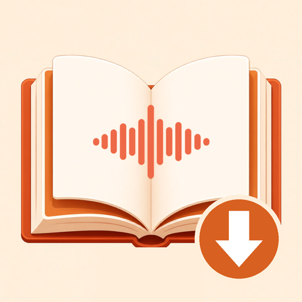

小説家になろうの作品を本棚に保存。縦書き・朗読・オフラインで、紙の本のような読書体験を。iPhone Duo の見開き表示にも対応しています。
基本機能は無料（広告あり）。広告なしの つみよみPro、クラウド朗読が使える 朗読プラン／ちょい聴きプラン、音声コインをアプリ内で購入できます。
※ 作品の本文は各サイトから、ご自身の私的利用の範囲で保存されます。本アプリは各小説サイトの公式アプリではありません。